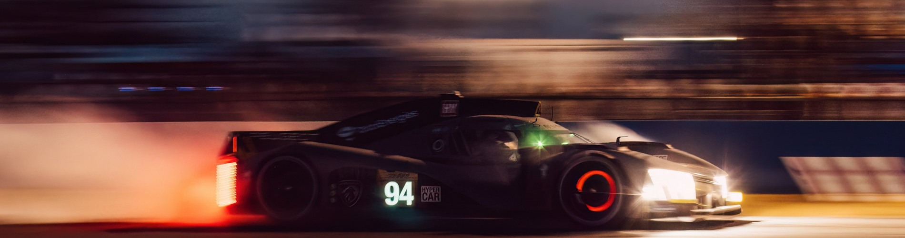
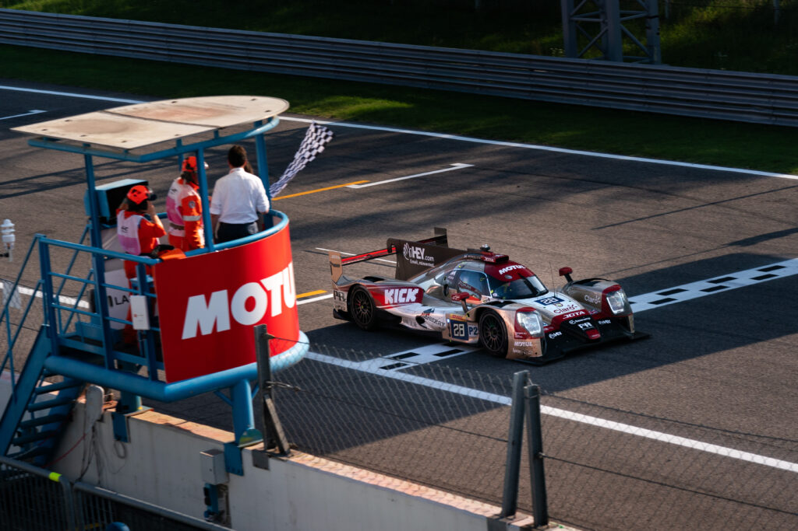
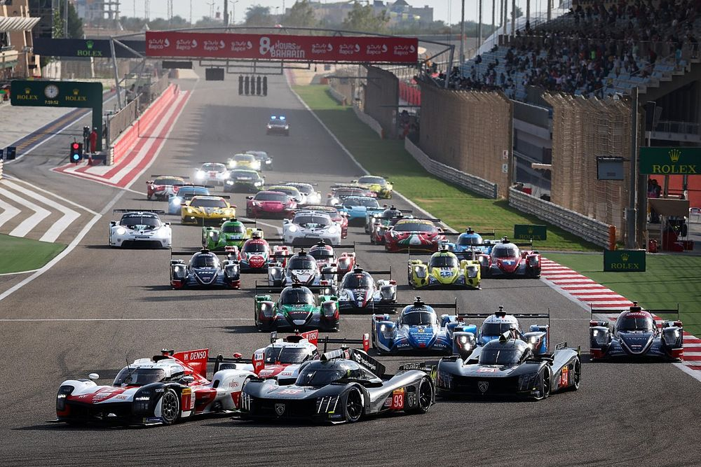
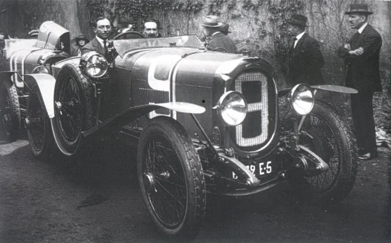
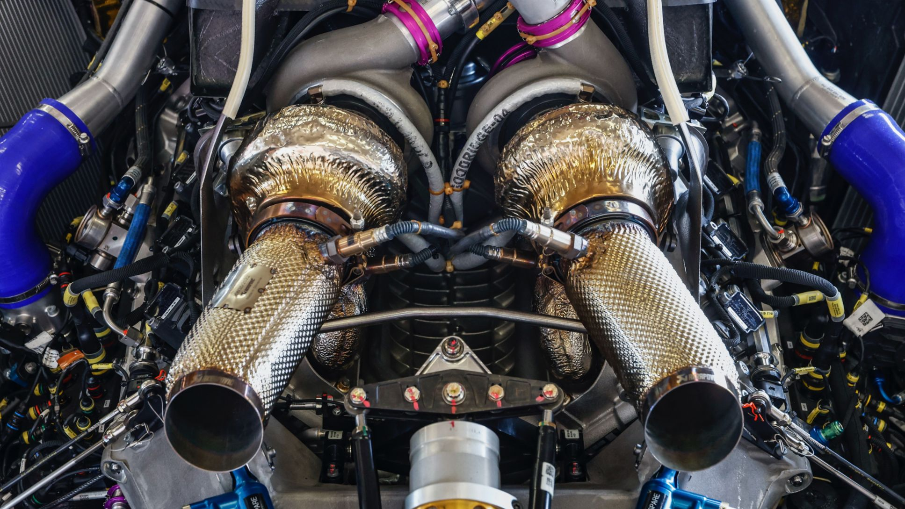
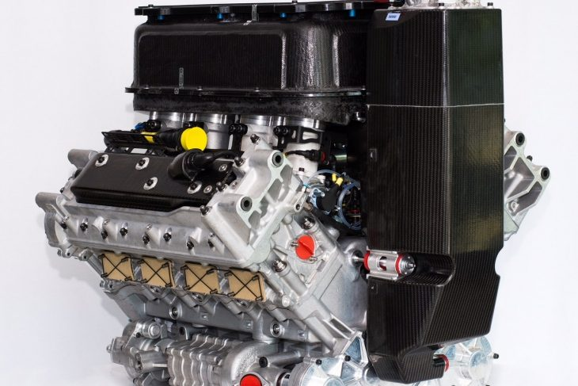
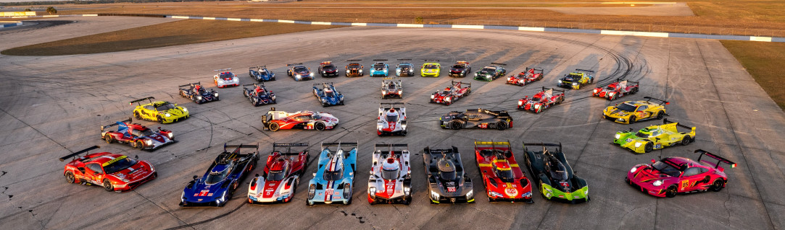

<!DOCTYPE html>
<html lang="en">
<head>
    <meta charset="UTF-8">
    <meta name="viewport" content="width=device-width, initial-scale=1.0">
    <title>Motorsport37 - WEC</title>
    <link rel="stylesheet" href="../CSS/reset.css">
    <link rel="stylesheet" href="../CSS/categoria.css">
</head>
</html>
<body>
    <header>
        <div class="caixa">
            
            <nav>
                <ul>
                    <li><a href="../index.html">Início</a></li>
                    <li><a href="formula1.html">Formula 1</a></li>
                    <li><a href="motogp.html">MotoGP</a></li>
                    <li><a href="wec.html">WEC</a></li>
                    <li><a href="indy.html">IndyCar</a></li>
                    <li><a href="wrc.html">WRC</a></li>
                    <li><a href="formulad.html">Formula Drift</a></li>
                    <li><a href="nascar.html">Nascar</a></li>
                    <li><a href="game.html">Game</a></li>
                    <li><a href="creditos.html">Créditos</a></li>
                </ul>
            </nav>
                    
        </div>
    </header>

        <div class="conteudo">
            <header>
                <h1>WEC World Endurance Championship</h1>
            </header>

            <h2>Como funciona a WEC</h2>

            <p>O WEC é uma série de corridas de resistência que engloba eventos icônicos, como as 24 Horas de Le Mans.
               Diferentemente de corridas de curta duração, o WEC testa a confiabilidade e eficiência dos carros em provas longas.
               A competição inclui diversas categorias, como LMP1 (protótipos de elite), LMP2, LM GTE Pro e LM GTE Am,
               permitindo uma variedade de carros, desde protótipos híbridos até carros de produção. As equipes buscam
               a vitória nas categorias e o título geral ao longo da temporada.</p>

            

            <h2>Onde a WEC corre?</h2>

            <p>o Campeonato Mundial de Resistência (WEC) percorre diversas localidades ao redor do mundo.
               A temporada é marcada por corridas em diferentes continentes, proporcionando aos fãs de
               automobilismo uma experiência global. Desde pistas icônicas na Europa até desafiantes
               circuitos nas Américas, Ásia, África e Oriente Médio, a WEC realmente leva o espírito de
               corrida para todos os cantos do planeta.</p>

            <p>Silverstone, Spa-Francorchamps, Fuji Speedway e Le Mans são alguns dos circuitos renomados
               que fazem parte do calendário da WEC, continuando a tradição de oferecer corridas emocionantes em locais variados.</p>

               

            <h2>Quando a WEC começou?</h2>

            <p>O Campeonato Mundial de Resistência teve suas raízes nas corridas de resistência europeias do pós-guerra e evoluiu para
               o formato atual de campeonato mundial. A primeira corrida de resistência internacional foi realizada em 1923 nas 24 Horas de Le Mans,
               e a WEC moderna foi oficialmente estabelecida em 2012. Desde então, tem sido um palco para alguns dos carros mais avançados e
               emocionantes do automobilismo mundial.</p>

               

            <h2>Como funcionam os carros da WEC?</h2>

            <p>Os carros da WEC são máquinas de alta tecnologia projetadas para resistir a longas distâncias e desafios variados de corrida.
               Diferentemente dos carros de F1, os da WEC são construídos para corridas de resistência, o que significa que precisam lidar
               com uma variedade de condições durante períodos mais longos. Eles apresentam tecnologias avançadas de eficiência de combustível,
               sistemas híbridos e design aerodinâmico otimizado.</p>

            <p>Os regulamentos da WEC incentivam uma mistura de protótipos e carros de produção, criando uma categoria de corrida diversificada e emocionante.</p>

            <video controls width="600" height="400">
                <source src="../VID/wecarwork.mp4" type="video/mp4">
            </video>

            <h2>Motor da WEC</h2>

            <p>Os carros da WEC utilizam uma variedade de fontes de energia, incluindo motores a combustão interna, sistemas híbridos e tecnologias de recuperação de energia.
               A categoria LMP1 (Le Mans Prototype 1) inclui carros híbridos com motores a combustão interna e sistemas de recuperação de energia, enquanto outras categorias,
               como LMP2 e LM GTE, permitem diferentes configurações de motores.</p>

            <p>Essa diversidade de tecnologias adiciona uma camada interessante à competição, destacando a inovação e a eficiência no desenvolvimento de carros de corrida.</p>

           <div class="image-container">
            
            
        </div>

        <h2>Quantas equipes e pilotos competem na WEC?</h2>

        <p>O grid da WEC é composta por uma variedade de equipes e pilotos, cada uma competindo em diferentes categorias. As equipes podem variar desde fabricantes renomados
           até equipes independentes, cada uma com seus próprios objetivos e estratégias de corrida. Com diferentes categorias, como LMP1, LMP2 e LM GTE, a WEC oferece uma
           mistura emocionante de protótipos e carros de produção em cada corrida.</p>

           

        <h2>Quem são os pilotos mais bem-sucedidos na WEC?</h2>

        <p>Assim como na Fórmula 1, a WEC tem seus próprios ícones e campeões. Pilotos como Tom Kristensen, recordista de vitórias em Le Mans, e Sébastien Buemi, campeão nas
           categorias LMP1 e LMP2, deixaram suas marcas na história da competição. Com equipes e pilotos em constante busca por sucesso nas corridas de resistência, a WEC
           ontinua a oferecer emocionantes batalhas em pistas ao redor do mundo.</p>

        

        <footer>
            <p>&copy; 2023 MilenaNovka. Todos os direitos reservados.</p>
        </footer>

</body>